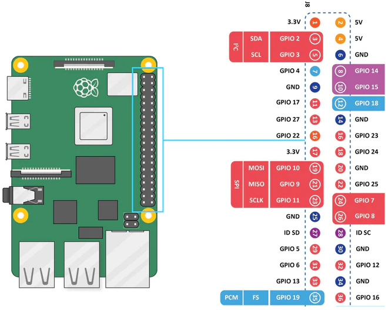
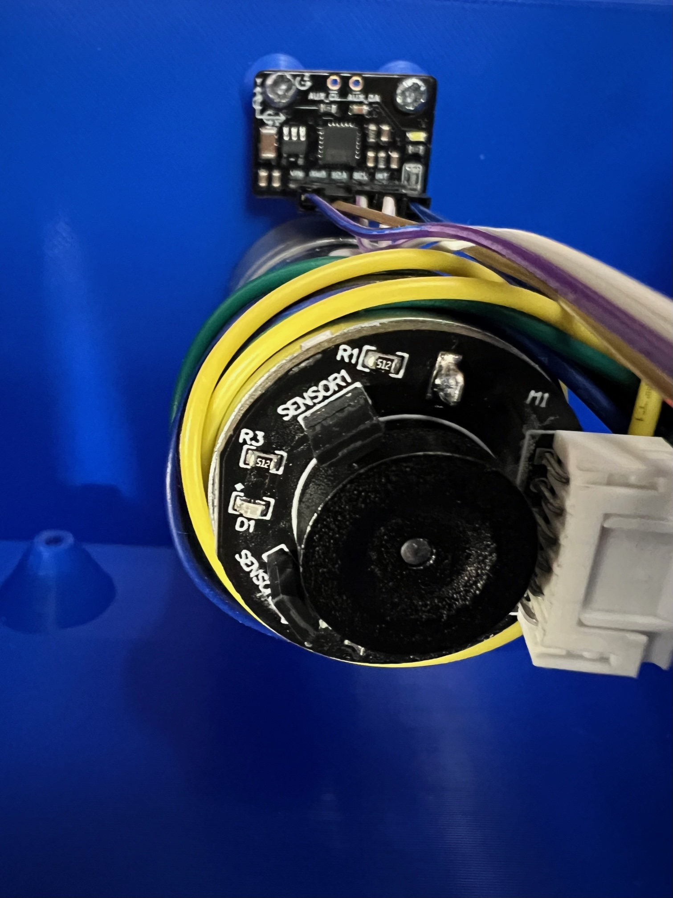

Welcome to the shakey-table GitHub page, developed by Adam Englebright, Torin Storkey, Gennady Magin, and Jambulingam Kothandapani.
As part of the Real Time Embedded Programming 5 course at the University of Glasgow, we have been tasked with developing a project that requires real time programming under GNU/Linux on a Raspberry Pi. The project we have decided on is a self-balancing cup holder, implemented using a reaction wheel. Essentially, an inverted pendulum. This git repository contains the code required to run this self-balancing cup holder and instructions on how to build it for both software and hardware.
We used a Pi 5, which introduced some extra challenges as its GPIO differs greatly from previous versions, meaning that common libraries like pigpio would not work. This project was only tested on a Pi 5 using the latest Raspberry Pi OS (uname -a output: Linux rpi5-2 6.6.21-v8-16k+ #1 SMP PREEMPT Tue Mar 12 11:01:10 UTC 2024 aarch64 GNU/Linux). We cannot guarantee that it will work on other versions of the Pi or on other operating systems or OS versions.
Software
Prerequisites/Dependencies
The following Debian packages (Raspberry Pi OS is built on Debian and has access to Debian packages) are required for this program to build and run on a rpi5:
linux-libc-devlibi2c-devmakecmakeg++
The following packages are recommended:
gitfor cloning the repository, although you can simply download the code from the GitHub website if you wish.doxygenfor creating nice documentation from the comments in the code.texlive-fullfor compiling a PDF document from the LaTeX code created by Doxygen (which also creates a website that you can view in your browser, so this is not necessary to view the documentation).
These packages can be installed using sudo apt install <package name>.
There are also installs required that cannot be found in the standard repos, primarily due to the use of a Pi 5:
libgpiodv2 is required. However, the version on the Debian Bookworm repo as of 2024-03-03 is v1.6.3 (despite the package name beinglibgpiod2). This must be installed from source.git clone git://git.kernel.org/pub/scm/libs/libgpiod/libgpiod.git(repo link) in a suitable place and follow theREADMEinstructions. The advised options to pass to theautogen.shscript are--enable-tools=yes(not necessary, but provides useful command line tools) and--enable-bindings-cxx(necessary, since this is a C++ program). Note that to build with C++ bindings, theautoconf-archivepackage is required (this can be easilyapt install'd from the Debian repos). You may also need toapt installthelibtoolpackage for the build to work.- As of the latest kernel for the Pi 5 on 2024-04-03 (6.6.21-v8-16k+), this patch is required for PWM to work through the sysfs interface: https://github.com/raspberrypi/linux/pull/6026. Install using
sudo rpi-update pulls/6026. See https://forums.raspberrypi.com/viewtopic.php?t=359251, particularly the post by neuralassembly and onward.
config.txt
To enable the I2C and PWM hardware on the Raspberry Pi 5, the following lines must be added to your /boot/firmware/config.txt:
dtparam=i2c_arm=ondtparam=i2c_vc=on,i2c_vc_baudrate=400000dtoverlay=pwm-2chan
Remember to reboot your Pi after entering these lines. The config.txt used on our Pi can be found in the root of this repo.
Building the Software
To build the software, follow these instructions:
git clone https://github.com/embeddedgyro/shakey-table.gitcd shakey-tablemkdir build(It is advisable to create an out-of-source build, hence this and the following step.)cd buildcmake ..make
After this, an executable program called ShakeyTable should exist under the build/src/ directory. That is, build/src/ShakeyTable. This program can be run by entering either the absolute or relative path of the executable. For example, /some/path/from/root/shakey-table/build/src/ShakeyTable, or src/ShakeyTable if you are still in the build directory. If you are in the same directory as the executable, you can enter ./ShakeyTable (the leading dot means this directory).
In addition to the main ShakeyTable executable, there will also be a ShakeyTable_no_INA executable. This runs a version of the main program that doesn't use the INA260 current sensor for torque control. Instead, it only uses the MPU6050 and a single PID controller for position control. This program was developed as a backup in case the INA260 could not be configured to work with the motor driver operating in both directions (see the wiki).
There will also be two executables for testing the functionality of the MPU6050 and INA260, named mpu_testing and ina_testing, respectively. mpu_testing will communicate with the MPU6050 and continuously write the measured angular position to the screen. ina_testing will do the same with the INA260, continuously writing out the measured current to the screen. These test programs are useful for confirming that the sensors have been correctly connected to the Pi and are functioning properly.
Documentation
Documentation of this project is provided by Doxygen formatted comments in the code. Doxygen can be used to create a website and PDF document that organise the documentation in a way that is clear, easy to navigate, and easy to read.
Master Release Documentation
To see the the documentation for the latest release of shakey table the documentation can be found here.
Self Hosted Website
To create the documentation website for personal forks and development builds, run make doc after the cmake .. command from the above build instructions. Running cmake .. will create a Doxyfile, and running make doc will run Doxygen on this file to generate the documentation website under the build/html/ directory.
To view this website, open your browser of choice. In the URL bar, enter file:///some/path/from/root/shakey-table/build/html/index.html. This will open the main page of the website. From there you can find the rest of the documentation using the navigation tools at the top of the page.
PDF Document
After running make doc, there will also be a build/latex/ directory. If you have a TeX distribution installed, you can cd into this directory and enter make. This will invoke pdflatex to generate a PDF document called refman.pdf, which will contain the Doxygen generated documentation for the project. View with your PDF reader of choice. Most browsers can also view PDF documents.
Unit Testing
ShakeyTable on the whole has three modules namely MPU6050, INA260 and Cytron MD20A along with PID control functionality. When developing unit testing we intend to validate each module's functionalities by a specific set of test cases and consolidated them into Online and Offline testing based on its nature of examination. Online unit testing validates each module's communication status to raspberry pi through i2c bus. Hence to run online testing each module has to be configured into the overall setup and actively involved in communication. On the other hand offline testing intend to validate the static functionalities of the software, examining the expected output against the module's program output. These testing can be validated when the setup is offline to ensure proper functioning of the software.
Building Unit Tests
Follow the software building procedure as mentioned before which includes cloning the repo and building the system through commands cmake .. make. This will generate the executable files for each module's unit testing functions. Now type ctest in the same directory to view the results of both online and offline testing together. You can also view the results of either one testing through the command ctest -R online or ctest -R offline which executes only the files associated to those testing. Individual executable files for concern modules can be found in the directory ./test/****/**. Here ./ indicates that you are required to be currently in build directory and **** indicates the module that you intended to view the executables (eg., mpu6050, ina260) and ** specifies the specific test file executable. eg., ./test/mpu6050/mpu6050_AccelOffset_ut.
Unit Testing Output
Each unit test will either pop Passed if successfully executed without exception or Subprocess aborted***Exception: with the exception scenario encountered if failed.
Hardware
Components
This section describes hardware components used in this project, and what is their purpose. Descritions are followed by links to datasheets for those components and information about how they should be wired and positioned on a physical prototype. All supporting reference images for this section can be found in "Hardware Assembly" section of this README.
The following components were used for this project:
- Microcontroller - Raspberry Pi 5. Used for executing the main program and interfacing with sensors and motor driver.
Documentation for it can be found here https://www.raspberrypi.com/documentation/.
- Current Sensor - INA260. Used for reading current flowing through the motor for PID motor control as current is proportional to the torque generated by the motor. Uses I2C communication protocol for interfacing with Pi.
Datasheet can be found here https://www.ti.com/lit/ds/symlink/ina260.pdf.
Should be connected in series with the motor. Vin- terminal is connected to the white wire on the motor and Vin+ is connected to the MB terminal of the motor driver. Powered by a 3V3 supply from the Pi. Communicates with the Pi through I2C1 pins (SDA->gpio0, SCL->gpio1) which don't have internal pull-up resistors, but there are pull-up resistors inside the current sensor, so that should not be a problem. The Alert pin is connected to gpio5 on the Pi.
- Gyro-Acelerometer Sensor - MPU6050. Measures the acceleration of the table in a 2D plane and subtracts the centripetal acceleration from it to get the acceleration due to gravity. Measurements are used for PID motor control. Uses I2C communication protocol for interfacing with Pi.
Datasheet can be found here https://mm.digikey.com/Volume0/opasdata/d220001/medias/docus/2204/SEN0142_Web.pdf.
Should be mounted firmly to the surface of the table with connection pins facing the ground. Position reference image can be found in "Hardware Assembly" section of the README. Powered by a 3V3 supply from the Pi. Communicates with the Pi through I2C0 pins (SDA->gpio2, SCL->gpio3) which have internal pull-up resistors. No extra external circuitry is needed. Interrup pin should be connected to gpio4.
- Motor Driver - Cytron MD20A. Regulates voltage supplied to the motor. Controls the direction and speed of motor rotation with PWM.
Datasheet can be found here https://robu.in/wp-content/uploads/2019/05/MD20A-Datasheet.pdf.
Uses a 12V external DC power supply connected to VA+ and VB- for delivering power to the motor. In this project, an external power generator was used for this purpose. Use thick multicore wires with good isolation for power lines. Controls the motor rotation by receiving a 20kHz PWM signal with a PID-controlled Duty Cycle from gpio18 on the Pi. Direction is controlled by a High-Low output from gpio23 into the DIR pin on the motor driver.
Motor - 12V DC Motor 12kg-cm 350RPM w/Encoder. Used for rotating the reaction wheel and creating the necessary torque for table stabilisation.
Device specifications are mentioned on this website https://uk.robotshop.com/products/12v-dc-motor-12kg-cm-350rpm-encoder.
The white motor wire should be connected to the Vin- terminal on the INA260, and red motor wire should be connected to the junction between the capacitros and inductors inside the LC filter.
- Low-Pass Filter (optional element) - LC filter with a cut-off at about 1200Hz to eliminate high-frequency noise coming from the motor driver and Pi PWM signal.
Uses two 560uH choke inductors(MCAP115018077A-561LU) after MA terminal on the motor driver in series with the motor (connect to red motor wire) and the current sensor. Seven 2.2uF polyester film capacitors(7212-707) are connected after inductors in parallel around the current sensor and motor driver. At high frequencies, the inductor becomes very resistive and blocks high-frequency signals from passing into the circuit. The capacitor becomes a short circuit for high-frequency signals. High frequencies flow through it, avoiding the current sensor and the motor. Inductors with a high current rating above 10A and capacitors with a high voltage rating above 20V should be used in this project to prevent damage and burning of the filter. Polarised capacitors cannot be used, as current can flow in both directions in this circuit.
WARNING! If there is not a lot of noise that disrupts current sensor readings, we reccommend not to use this compoenent as it might cause I2C communication issues and damage sensors due to high current and voltage spikes during the switching of the direction and duty cycle of motor rotation.
Hardware Assembly
This section contains all reference image materials for wiring and positioning hardware components.
This image represents the wiring of the whole setup: 
This image shows pin configuration on the Raspberry Pi 5 for assembly: 
This image shows the correct position of the gyro-accelerometer on the shakey table: 
CAD Design
For the cad design a OpenSCAD was used. OpenSCAD is an open source parametric CAD program. It has a programming language that it uses for defining the 3d design of objects. It is good for customisable designs. In the cad directory you can see the design file for the shakey table including the wheel lid and frame. The design includes mounting points for the mpu6050, the motor and the raspberry pi. Then a lid for the cup to rest on. Also the wheel has holes to allow bolts to be inserted to vary its moment of inertia.
Social Media
Our project was advertised via Instagram https://www.instagram.com/antiquakegu/ and Twitter https://twitter.com/shakey_table.
Instagram was our main target. We got 120 followers, out of which 50 were constantly active, reacting on our stories, supporting us in the comments and liking our posts. Our strategy was to start advertysing our project when we were ready to start building and testing our prototype with actual hardware, as general audience is not interested in the coding side of the project on social media. We started advertising our product when we had our project fully planned and ready on the software side.
We were posting stories of our work on the prototype every 2-3 days (you can see some of them in the highlights section called "project dev"), and tried to guide our audience through different development stages of the protype, share our wins, failiures and soltions to problems we faced on our path. We were also releasing 2 posts a week that summerised our main achievements and familiarised people with what we were actually doing. We tried to make it as non-technical as possible not to bore people with unnessessary details, but we were always happy to answer any questions in the comments.
The Instagram "Reel" with prelimenary functionality of our table recieved more than 15k views in the first 24 hours after release.
Our Instagram page: 
Reels on Instagram: